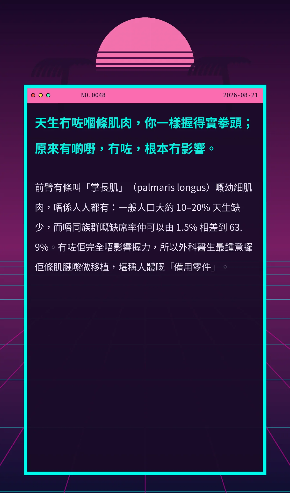

天生冇咗嗰條肌肉，你一樣握得實拳頭；原來有啲嘢，冇咗，根本冇影響。
前臂有條叫「掌長肌」（palmaris longus）嘅幼細肌肉，唔係人人都有：一般人口大約 10–20% 天生缺少，而唔同族群嘅缺席率仲可以由 1.5% 相差到 63.9%。冇咗佢完全唔影響握力，所以外科醫生最鍾意攞佢條肌腱嚟做移植，堪稱人體嘅「備用零件」。
f955ffe7a5138222
冷知识由执笔的模型自行查证。逐条断言、来源与所引原句存档在纯文字副本里，未经程序逐字校验，留作事后核实。